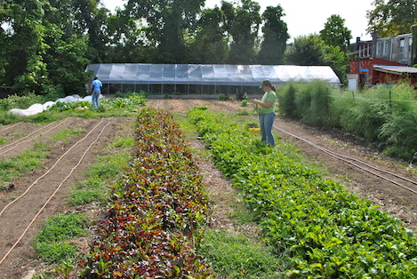
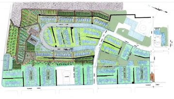

Urban Farming
Neighborhood Foods Farm
In 2010, Urban Tree Connection became the legal conservator of a long- abandoned 3/4 acre property on the 600 Block of North 53rd Street, which had been home to a construction company for many years. After significant remediation and clean-up, Urban Tree Connection developed a fully-functioning farm that grows sustainably cultivated produce to address access to healthful food for the residents of Haddington.
Our main farm site is supplemented by smaller plots, including high tunnels on the grounds of Ward AME Church (43rd Street and Aspen Street), and a garden at First African Presbyterian Church (42nd Street & Girard Avenue). Together with the Farm, these sites comprise a growing neighborhood food system, which we hope to continue expanding. The various sites also provide a living classroom for the diverse array of youth and adult community programs described above.
Paragraph on Merion Avenue here.
Farmers Markets
Produce from our Philadelphia farm sites flows into our subsidized Community Farmers Market (53rd Street and Wyalusing Avenue - Saturdays from 10:00 AM - 2:00 PM) and is also sold at farmers markets around the city, including Rittenhouse Square Market (Walnut Street between 18th and 19th Streets - Saturdays from 10:00 AM - 2:00 PM), Chester Square Market (Chestnut Street between 32nd and 33rd Streets - Tuesdays from 3:00 PM - 7:00 PM), and Liberty Lands Market (3rd and Poplar Streets - Thursdays from 4:00 PM - 7:00 PM). Revenue from these markets helps to sustain the Neighborhood Foods Farm.
Chester Farm Initiative
First paragraph on Chester here.
Second paragraph on Chester here.
Third paragraph on Chester here.